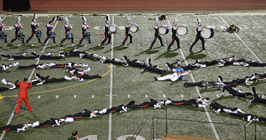

Originally founded as the "Junior Dukes" in 1963 by American Legion Post #6 in Dubuque as a junior corps for students in the tri-state area, the Colts have grown to become one of the longest lived and most consistently successful drum corps in the activity. In 1967, the organization began a Cadet corps for younger students in the area. Going through many name and identity changes throughout the 1960s and 1970s, the organization finally landed on the name "Colts" for the older corps and "Colt Cadets" for the younger corps in 1976. That same year, the Colts sponsored a winter guard that quickly earned national acclaim. The guard captured the prestigious Midwest Color Guard Circuit Championship, and later that year won the V.F.W. National Color Guard Championship.
Since then, the organization has grown considerably, and annually impacts more than 500 students through the two drum corps, summer band, and steel drum ensembles, as well as thousands of fans who see the groups perform every season. The Colts have experienced significant competitive success, placing in the Top 12 at the Drum Corps International World Championships eight times since 1993 and in the Top 25 every year since 1982. The Colts Cadets have also had competitive success, placing in the Top 12 at the Drum Corps International Open Class Championships seven times since 2010.
The Colts mission, "We use music and excellence to teach each other about success in life," is the driving force behind all the programs offered and pushes the organization to consantly provide the best student experience in the activity.
Drum Major: Barry Buelow
In the spring of 1963, after hosting a drum corps show for several years, the American Legion Post in Dubuque decided to start it's own junior corps. A committee was appointed to form a junior corps. An ad in the paper asked for boys interested to come to a meeting at the American Legion Hall. The boys were given old bugles and drums from the senior corps. The adult corps was known as the "Dukes of Dubuque" so the corps adopted the name "The Junior Dukes".
The first uniform of the Junior Dukes consisted of black pants and shoes and a white shirt- all furnished by the corps members. Members were furnished with a black and white overseas cap with a red tassel.
The name "Junior Dukes" appeared on the hat. They also wore a bolo tie with the Dubuque Packing Company "Fleur de lis" on it.
The Junior Dukes consisted of 38 boys, of which there were 24 horns, 10 drums, 2 flags and 2 guards for the American Flag. Anyone who couldn't play an instrument was a guard on the American Flag, also because of limited equipment.
The first two years the corps was a parade unit. Dick Davis taught horns, drums and marching. In 1964, Clarence Hagge started to teach the Junior Dukes horns and marching.
The Dukes of Dubuque folded in 1964 and the senior group lost interest. At that time Clarence Hagge, Dick Davis and Bob Buelow took over the corps. With the folding of the senior corps the junior corps considered a name change. Thus it was that the "Legionnaires" took the field in 1965.
Director: Bob Buelow
Drum Major: Rob Astgen
This was the first year the corps marched under the name "Legionnaires."
It is interesting to note that some show programs called the corps The Dubuquers or spelled the name Legion Aires or Legionaires or Legionnaires.
Only 15 of the 48 boys who marched in 1964 returned. The corps attempted to recruit 13 to 15 year olds instead of 16 year olds because they felt they could keep them involved longer. The corps numbered 42 this year.
The corps uniform consisted of black long sleeve shirts, a white scarf, black pants and black shoes.
This was the only year the corps marched under the name Legionnaires in which only boys participated. Girls were added to the membership in the fall of 1965.
Director: Clarence Hagge
Drum Major: Rob Astgen
Repertoire:
Wagon Wheels
Powerhouse
Walking My Baby Back Home
Chimes
The Parents and Booster Club was formed on November 16, 1966.
There were 75 members in the corps this year ranging from 11 to 16 years old. They wore black western uniforms and the color guard wore white shirts, a black skirt and boots. The first trophy ever won by the corps was a second place in the Hazel Green, WI parade.
Director: Bob Buelow
Drum Major: Rob Astgen
The corps made several parade appearances in Iowa, Illinois, and Wisconsin as members of The Iowa American Legion Sponsored Uniformed Group (IALSUG), Badgerland Drum and Bugle Corps Association, Mid-American Drum and Bugle Corps Circuit and the Midwest Color Guard Circuit.
This year the corps had 80 members with an average age of 16. The Cadets were formed in the fall of 1967 as a feeder corps for the "A" corps. At that time they were called the "A" corps and the "B" corps. Sonia Hickson was the first director of the Cadets, assisted by members of the "A" corps.
Director: Bob Buelow
Drum Major: Rob Astgen
Repertoire:
Wagon Wheels
Thuroughly Modern Millie
Hello Dolly
Magnificent Men In Their Flying Machines
The Legionnaires were incorporated as a non-profit organization this year and had an operating budget of $13,000. The corps fielded 83 members, while the Cadets fielded 80.
1968 was the first full year of competition. The corps traveled over 4000 miles this year and were honored with a day set aside as recognition day to show Dubuque that the corps was a special benefit to the city by the example it set.
The corps brought home 8 first place and 4 second place trophies, including the 1968 State American Legion Junior Color Guard Championship. The City of Dubuque proclaimed the Legionnaires the "Junior Ambassadors of Goodwill" for the city of Dubuque and were presented with the official Dubuque city flag.
New uniforms were purchased. The western uniform was chosen because "they were the cheapest."
Director: Bob Buelow
Drum Major: Rob Astgen
Repertoire:
Wild, Wild West
Mariah
This Guy's In Love With You
Wagon Wheels
Valley Of The Dolls
My Country
The name change to the Colt .45 became official on November 14, 1968. The change was due primarily to the corps desiring to perform/compete in a greater variety of shows other than Legion sponsored events.
This was the first year the Colt .45 adopted its all western uniforms and music. The uniforms consisted of black and white fringed shirts, black or white pants and black, pleated skirts with white inlays for the color guard. Red ties and pettipants and cowboy boots and hats completed the uniforms.
The corps competed in Class A competition for the first time and won almost every contest in which they entered. The corps participated in 18 events with stops in Iowa, Illinois, Wisconsin and Michigan. The longest trip was to Munsing and Marquette, MI on Lake Superior.
The corps rounded out their season by winning the Mid-American Circuit Championship and the Iowa VFW Junior Championship.
The purchase of the corps first truck was the first "big" investment.
The Cadets had 86 members and had their first field drill.
Director: Bob Buelow
Drum Major: John "Fuzzy" Hartman
Repertoire:
Wild, Wild West
Big Country
Variations Of America
Overture To A Tired Old Horse Eating
Chestnuts In A Burning Barn
Colt .45 Stomp
If Ever I Should Leave You
The Colt .45 won the Iowa State American Legion Drum and Bugle Corps Show and the color guard won the Iowa State American Legion Color Guard Championship with less than three weeks of preparation.
The corps performed the "Colt .45 Stomp". This is believed to be the first non-standard meter arrangement in the drum corps activity. The corps made its first trip to Casper, WY this year.
Director: Harlow Haas
Drum Major: John "Fuzzy" Hartman
Repertoire:
Ghost Riders
Proud Mary
Long And Winding Road
Tour this year went to Overland Park, Hutchinson and Salina, KS, as well as Dallas, TX for the VFW Nationals. This was the first year the corps competed in the national competition and the first time it performed on artificial turf. The corps took first place at the American Legion Color Guard Championships.
The corps purchased new horns and drums this year. The cost of the equipment was around $6,000.
Director: Eldon "Fritz" Biver
Drum Major: John "Fuzzy" Hartman
Repertoire:
Ghost Riders
Medley from "Paint Your Wagon"
Gospel Of No Name City
I Still See Elisa
There's A Coach Coming In
The corps consisted of 97 members, 40 of whom were first year members, all recruited from the Cadet corps. The Cadet corps still had 72 members, even with the large recruitment to the "A" corps.
The corps traveled over 6000 miles this year. The Colt .45 brought home the first place trophy at the American Legion in Des Moines. Tour this year was to Chicago for the American Legion Nationals and to Minneapolis for the VFW Nationals. The corps placed 12th at the American Legion Nationals and 9th at the VFW Nationals.
The corps had an operating budget of approximately $42,000 this year.
Director: Eldon "Fritz" Biver
DCI Placement: 28th
Drum Major: John "Fuzzy" Hartman
Repertoire:
Big Country
There's A Coach Coming In
Music from "Cades County"
Music from "Mancini And the Mancici Generation"
Medley from "How The West Was Won"
When Johnny Comes Marching Home
Battle Hymn Of The Republic
United We Stand
The corps fielded its largest membership in its history with 107 members. Only 29 of the members had more than 2 years experience, 38 had one year experience and 40 were new members.
The corps donned new uniforms this year. The "Spaghettibacks" were black vinyl with red vinyl fringe work or black vinyl with white vinyl fringe. The outfit was finished out with gauntlets, boots, pants, skirts, hat and tie.
The corps placed second at the State Legion Championships in Cedar Rapids. The Cadets also competed at the state contest.
The corps went on tour to New Orleans, LA for the VFW Nationals where they placed 5th. The Colt .45 placed first in the parade competition. The Colt .45 provided the half time entertainment for the 56,000 fans at the Chicago Bears-Detroit Lions game at Soldier Field in Chicago. When the corps started their show the crowd sat up and gave them their full attention. They received a standing ovation at the end.
Director: Eldon "Fritz" Biver
Drum Major: Joe MacFarlane
Repertoire:
Fanfare For The Common Man
Billy The Kid
Oklahoma Crude
The Sting
Ironsides
How The West Was Won
100 people marched with the corps this year. The Cadets had 70 members, of which 80% were in their first year.
In a return engagement, the corps played at half time of the Chicago Bears football game.
The corps traveled to Kentucky, Pennsylvania and Ohio competing against the national powerhouse corps. The Colt .45 placed 3rd at the Iowa American Legion Championship.
Director: Dick "Sarge" Feipel
DCI Placement: 30th
Drum Major: Kevin O'Toole
Repertoire:
Wild, Wild West
Ghost Riders
How The West Was Won
Scalphunters
Left Bank Express
Ironsides
California Dreamin'
The corps traveled to the east coast and performed in New York, Pennsylvania and Delaware and visited Washington DC. The corps participated in the DCI Championships in Philadelphia placing 30th.
Director: Tom Faulkner
DCI Placement: 25th
Drum Major: Kevin O'Toole
Repertoire:
Emperata Overture
Just You And Me
Left Bank Express
Tower Of Power Medley
Soul And Inspiration
The corps dropped the .45 from its name citing the limited music available in the western theme and the association with the gun and beer.
The Colts consisted of 105 members, although the number kept fluctuating. 23 members quit during the course of the summer. The corps had 2 uniforms this year, parade and competition. The parade uniform consisted of the guards wearing red shirts and black skirts with white pleats. The rest of the corps wore pants and white shirts with red gingham western yokes. The competition uniforms were the old "western style" the corps had revitalized.
Future director Jim Mason joined the Colts staff.
The corps traveled to New York City for the VFW Nationals and placed 20th. The Colts also placed in the top 25 at the DCI Prelims held in Philadelphia.
COLTS COLOR GUARD
The 1976 Color Guard started their competing season with 21 people.
They finished 1st in 6 contests and captured the Championship Title
at the Midwest Color Guard Circuit Championship in Elmhurst, IL. The
VFW National Color Guard Championship in New York City was their next
competition. The Colts Competition Guard was declared the 1976 VFW
National Color Guard Champions and scored the highest number of points
in the history of the VFW National Guard Championships. The entire
Colts Color Guard was named the 1976 VFW National Color Guard Parade
Champions. A few days later at the DCI Color Guard Championship the
guard took 3rd place.
Executive Director: Jim Killoran
Director: Jim Mason
DCI Placement: 25th
Drum Major: Bob Vasquez
Repertoire:
Gershwin's "Prelude"
Suncatchers
Evergreen
Watch Closely Now
With One More Look At You
The 1977 corps was the largest in history to date with 120 members, of which only 9 were from outside of the Dubuque area. The Cadets fielded 61 members.
New uniforms were purchased. They consisted of an orange riverboat gambler style formal jacket with a white ruffled shirt and black tie with black pants worm by the horns and drums. The color guard had gold jackets and black skirts and all sections wore a round black gambler hat. The Competition Guard had two units. At the Midwest Color Guard Circuit Championship the Color Guard took second while the Colts "Too" took 21st. At the Iowa American Legion State Color Guard Championships the Colts won 1st place and Colts "Too" second place. At the American Legion Color Guard Championship in Denver the Colts finished 2nd while the Colts "Too" finished 4th. The Colts won the VFW National Color Guard Championship held in Minneapolis.
The corps placed 26th at the DCI Championships in Denver, but due to the disqualification of the Bridgemen the Colts officially placed 25th. At the American Legion Championships in Golden, CO the corps placed 12th.
Director: Jim Mason
DCI Placement: 27th
Drum Major: Bob Vasquez
Repertoire:
Showboat Scenario
Birth Of The Blues
Take Five
A Star Is Born
1978 marked the first year of the World Guard International Competition and the Colts guard finished 4th. The guard also finished 3rd at the Midwest Color Guard Finals.
The corps purchased new bugles in December of 1977. The sopranos and baritones were the new two valve variety and the mellophones, french horns and contras were the old single piston. The total purchase cost $21,354 for 63 horns. The instruments had a brass lacquer finish. Only two other corps used this type of horn. The theory behind the brass horn was that it created a darker tone when played. The Colts season found the corps trying to recover from the largest turnover ever recorded in corps history. The corps barely missed Associate Membership again by placing 27th at the DCI Championships in Denver, CO.
Although the goal of becoming an Associate Member in DCI was not met, the season proved to be very interesting for all of the marching members. Because of the huge turnover in membership the corps needed a couple months to find itself and the reasons why it was putting in 12 to 15 hour days. The reason became clear when the corps left on tour. A recent corps tradition, that of a family atmosphere, started to develop and the days of work and sacrifice became worthwhile as the realization set in. Not only was the work paying off in self satisfaction, but there also developed the notion of trying just because you knew the person next to you was putting out 100%.
It was this feeling of being a family that let every member take satisfaction in some of the accomplishments that were awarded to individual members. Among these accomplishments include: Bob Vasquez being named 3rd runner-up for Best Drum Major of the Year by Drum Corps World and Jolene Miller-O'Toole was named Color Guard Captain of the Year by Drum Corps World.
Director: Jim Mason
DCI Placement: 35th
Drum Major: Dave Kapp
Repertoire:
Sunburst
Birth Of The Blues
Showboat
Star Gazer
Tara's Theme
The year started with a new uniform look for the drum line. Off came the orange jackets to be replaced by bright yellow vests and black garter belts. The guard utilized the orange jackets with black leotards and tights. The rifle line also presented a new look by donning red vests during certain parts of the show. The corps also had 27 new flags.
1979 proved to be another trying year for the Colts, a fact compounded by yet another large turnover in membership. Also, due to financial problems the corps didn't tour extensively but did travel to the DCI Championships in Birmingham, AL and placed 35th. The guard was especially hard hit by membership turnover with no less than 27 new members. Even with this turnover they placed 11th at the WGI Midwest Regionals and 7th at the Midwest Color Guard Circuit Championships.
The corps played for President Jimmy Carter while he was traveling down the Mississippi River on the Delta Queen. Drum Major Dave Kapp shook hands with President Carter at which point the President said the corps "sounded great".
Director: Jim Mason
DCI Placement: 28th
Drum Major: Jim Strong
Repertoire:
Everything's Coming Up Roses
Summertime
It Ain't Necessarily So
There's A Boat Dat's Leavin' Soon For New York
Turkey In The Straw
Smile
The corps established the Robert M. Buelow Award. The award paid special tribute to Bob for his 17 years of service to the corps and was awarded to the person who "contributed leadership, loyalty and personal commitment to the Colts Drum and Bugle Corps during the preceding years." The first recipient of the Robert M. Buelow award was Gene Steichen. The Colts Winter Guard experienced another tough season, finishing 18th at the Midwest Color Guard Circuit Championships.
The goal for the season was to attain Associate Member (top 25) status at the DCI Championships. At the championships in Birmingham, AL the corps placed 28th. Though the members were disappointed they knew they had put on the best show they were capable of. They did not make Associate Membership that year but they did find out that they could achieve as a group if they all shared a common attitude and approach. They also had a lot of fun doing it.
Director: Jim Mason
DCI Placement: 28th
Drum Major: Larry Rothbard
Repertoire:
There's A Boat Dat's Leavin' Soon For New York (from "Porgy and Bess")
Summertime (from "Porgy and Bess")
Swanee
Crosswindsk
Come Sail Away
The Cadets had 33 members.
In 1981 the Colts took their first major plunge into the world of public relations. The corps sponsored the World Premier of the movie "Take This Job and Shove It" in Dubuque, as well as the Carson and Barnes Circus. 32,000 flyers announcing the circus had been sent to most of the homes in Dubuque. It was after the printing and subsequent delivery of these flyers that a printing error was discovered identifying the Colts as the "Colts Drug and Bugle Corps".
The corps purchased three used buses. They were named the Poseidon, the Lusitania and the Titanic by the corps.
1981 was the first year the Colts embarked on two tours. The first tour was to the Southern states with the corps performing shows in Louisiana, Oklahoma and Texas. It was during this tour that the corps found out that it had lost its lease at the Colts Building.
During the second tour the corps made the finals night performances at the US Open, DCI North and DCI Canada shows for the first time in many years. The Colts finished 28th at the DCI Championships in Montreal.
On August 5, 1981 the Colts moved into the lower level of the Fischer Arcade building, where the bingo hall existed until 2000.
Director: Jim Mason
DCI Placement: 24th
Drum Majors: Keith Schamau and Tim Shirey
Repertoire:
Swing, Swing, Swing
Summertime (from "Porgy and Bess")
Prelude to "An Angry Young Man"
Come In From The Rain
The 1982 Colts can be considered a significant turning point in the Colts History. After a slow start during the winter season a large influx of members came in from elsewhere (i.e. Chicagoland area, Omaha and Texas). The corps continued to strengthen the "family" atmosphere and the audience oriented shows. Before the DCI Canada show the corps had a talk about getting too involved in the competitive aspects of drum corps. The members were directed to do what they do best-perform.
Future Director Greg Orwoll joined the staff.
At the DCI Championships in Montreal the corps reached its season goal and placed in the top 25 with a 24th place finish. This was the highest placement to date.
Dave Lang took top honors at the DCI Individual contest on baritone and at the end of the season Greg "Harpo" Blum's soprano was retired. Greg was known throughout the drum corps activity as one of the finest soprano soloists.
Director: Jim Mason
DCI Placement: 22nd
Drum Major: Keith Schamau
Repertoire:
"Mississippi Suite"
A Minstrel Show - Luck Be A Lady Tonight
Sit Down You're Rockin' The Boat
Dill Pickles
Mr. Bojangles
Ol' Man River
The Colts were innovators in the 1983 season. The corps introduced the complete show design for the first time in drum corps history. The "Mississippi Suite" used different songs to tell a story. The show utilized props to tell the story. The corps started slowly and were battling the competition bug until the props were added. At a show in North Carolina the crowd reaction to the show and a second place finish caused an attitude change. The crowd, feeling the Colts should have won, booed the Colts second place finish. This showed the members that numbers and placement do not matter. It was how you, as a member, felt after a performance. The sound of a crowd and the memories of performing to one's utmost abilities are everlasting, number and placement is not.
This attitude change helped the corps finish 22nd at the DCI Championships in Miami.
Director: Jim Mason
DCI Placement: 23rd
Drum Major: Keith Schamau
Repertoire:
Stardust
Swing, Swing, Swing
A Night In Tunisia
Peninsula
What's New
Come In From The Rain
In 1984 the Colts were the "Kings of Swing". The corps fielded drum corps first trap set line. Four trap sets were placed in the pit and became a trademark of the Colts. The trap sets were in line with the up-beat, swing show being presented.
The corps purchased used horns from the bankrupt Memphis Blues Brass Band. They were brass, like the instruments purchased in 1977. All the horns were two valve, bringing the corps into "modern" drum corps equipment.
The corps placed 23rd at the DCI Championships in Atlanta, GA. Dave Lang won the DCI Individual contest on baritone and received the Jim Ott Scholarship Award.
At the end of the 1984 season, after 7 years as director, Jim Mason left to become the director of the new Star of Indiana Drum and Bugle Corps.
Director: Greg Orwoll
DCI Placement: 16th
Drum Major: Keith Schamau
Repertoire:
Stardust
Love For Sale
A Night In Tunisia
Peninsula
Skylark
Sing, Sing, Sing
The corps continued in the swing tradition bringing back many of the songs from the previous year along with the trap set line. The Colts surprised many people with their crowd oriented show. The question on the drum corps tour this year was "Who are the Colts?".
After a tour through Texas and the east coast the corps went to Madison, WI for the DCI Championships. The Colts surprised everybody and answered who they were with a 16th place finish.
During the summer the corps was proclaimed "Iowa's Ambassadors of Music" by Governor Terry Branstad.
Director: Greg Orwoll
DCI Placement: 20th
Drum Major: JJ Miller
Repertoire:
Johnny One Note
I've Got Rhythm
Smile Again
Heat's On
Thanks to Bill Cook, founder of the Star of Indiana in Bloomington, IN, the corps received new uniforms. The corps proper uniforms were cadet style with black pants and shoes. The jacket had a white shoulder and collar, with a pyramid of colors (Burgundy, Red, Orange, Yellow) and mustard yellow sleeves. The hat had the same pyramid of colors.
The motto for 1986 was "New look, new sound, new direction". The Colts were continuously challenged; fan expectation, adverse practice conditions, long bus rides, multiplicity of bus breakdowns, a difficult show, and most importantly, a new look, sound and direction came forth.
The corps kept the swing style show and trap set line.
At the DCI Championships in Madison, WI the corps placed 20th and lived up to their new image of being "Iowa's Corps".
Director: Greg Orwoll
DCI Placement: 20th
Drum Major: Julie Yanda and Bart Miller
Repertoire:
Honeymooner Suite
Love For Sale
Up The Ladder To The Roof
Mardi Gras
Somewhere Out There
Headed For The future
The corps celebrated its 25th Anniversary in 1987 continuing with a jazz based show. The corps dropped the trap set line, which had been in place since 1984.
The corps traveled to Denver, the south and midwest. The Colts finished 20th at the DCI Championships in Madison, WI.
Julie Yanda was the first female drum major in the Colts 25 year history.
Director: Greg Orwoll
DCI Placement: 18th
Drum Major: Ky Hascall
Repertoire:
Mountain Greenery
Just In Time
Mardi Gras
My Funny Valentine
A change in the musical arrangers brought a different approach to jazz to the Colts. The corps was comprised of 75% Iowa high school and college students.
Except for the contras, all the horns, which had been brass colored since 1984, were hand chrome-plated at a fender shop in Dubuque. Sequins were added to the uniform to help create more flash in the corps.
After touring the Midwest, East Coast and Canada the corps went to Kansas City, MO for the DCI Championships where they placed 18th. In an unusual placement change for finals week, the Colts moved from 21st place to 18th in two days.
This year also saw the Colts defeat the rival Troopers for the first time in corps history.
Director: Greg Orwoll
DCI Placement: 21st
Drum Major: Ky Hascall
Repertoire:
Matchpoint
Willowcrest
Ballad For A Rough Year
Reprise
The jazz style continued into 1989 with the largest hornline in corps history so far at 54 members. The corps also had 22 in the color guard, 31 in the percussion section and 1 drum major.
Though the concept of the show was well conceived, the final product did not produce the desired effect. The corps performed a 21st place finish at the DCI Championships in Kansas City.
Though there had been foreign members participate in the corps in previous years, a record eight foreign members traveled to Dubuque to be a part of the Colts.
Misfortune struck the annual Music on the March show in Dubuque when 90 minutes into the show the skies opened and drenched the area in 3/4 of an inch of rain. 15 buses were stuck in a quagmire and 5 tow trucks were needed until 3:00 am to remove the buses and support vehicles. The show became known as "Music in the Mud" for years to come. It so happened that the show announcer was the local meteorologist. He moved out of town soon after the show.
Director: Greg Orwoll
DCI Placement: 23rd
Drum Major: Shane Oswald
Repertoire:
Santorini
Ninth Symphony
On A Hymnsong For Phillip Bliss
Farondale
The 1990 season was a rebuilding year in the Colts organization. A major changeover in staff, the mass exodus of members in the off-season and a change in the recruiting approach presented challenges throughout the season for the staff and 83 members.
New uniforms were purchased this year. A red tunic with a white sash from the left shoulder to the right hip with silver sequins, the black pants from the previous year made up the corps proper uniform in addition to the white shakos from the previous year with the pyramid in silver. The contras were chrome-plated to complete the transition to silver horns.
The show took a new direction with "New Age-Classical" as the theme. The music was new age and classical in nature but arranged in a jazz fashion. This was one of the early years that drum corps began exploring New Age music in the activity.
The corps was challenged throughout the season and placed 23rd at the DCI Championships in Buffalo, NY.
This was the turning point in the modern era of the Colts. The philosophy was clarified and a 5-year-plan was put in place for program, staff and membership development. A new priority was made to march only the members who wanted to be a Colt.
Director: Greg Orwoll
DCI Placement: 22nd
Drum Major: Anne Keller
Repertoire:
Santorini
On A Hymnsong For Phillip Bliss
Shock
Earthrise
In The Springtime When Kings Go Off To War
As an outgrowth of 1990's refocusing, 1991 saw the restructuring of the member responsibilities and approach to rehearsing and performing, while still keeping the focus of the corps toward entertaining the audience, educating the member and keeping a family atmosphere about the corps that had been in place for many years. The staff was solidified to help foster this philosophy.
White pants replaced the black. Volunteers sewed over 90 pair of pants over a two month period in preparation for the summer tour.
The show continued with the New Age theme. The demanding show brought a 22nd place finish at the DCI Championships in Dallas, TX.
Jill Sherling won second place at the DCI Individual contest on mellophone.
Director: Greg Orwoll
DCI Placement: 20th
Drum Major: Anne Keller
Repertoire:
"The Four Seasons"
Morning To Morning
1,000 Brain Dead Weasels
The Heart Is A Lonely Hunter
Reprise
The corps continued to build membership with a strong base from Iowa, as well as a large group from Alabama and Tennessee.
The music continued in the New Age/Contemporary vein presenting "The Four Seasons". Music represented the changing of the seasons. In Madison, WI at the DCI Championships the corps placed 20th.
Director: Greg Orwoll
DCI Placement: 12th
Drum Major: Christian Baughman
Repertoire:
"The Four Seasons"
Winter
Spring
Summertime
The Heart Is A Lonely Hunter
Reprise
The corps celebrated its 30th Anniversary in 1993. As part of the celebration the corps sponsored a parade in conjunction with the local community theater's production of "The Music Man". The grand marshal of the parade was Mrs. Meredith Willson. The corps that were performing in the evening show participated in the parade. This parade was televised live for 1 hour and, according to the Dubuque Police Department, attracted the largest crowd to witness a parade in Dubuque in modern times.
The modern day Colts Alumni Association was formed, and the Colts Hall of Fame was established in 1993. The Hall of Fame is a way to recognize the people who have been a vital part of the Colts history. Inductees were Eldon "Fritz" Biver, Bob Buelow, Dick Fox, Harlow Haas, Clarence Hagge, Mel Hein and Merle Mathis.
The corps purchased 10 new three-valve mellophones in the first phase of updating the equipment. This was the first section of instruments to be replaced since 1984 and the first brand new instruments since 1977. Many of the horns being used were older than the members. Sabian Cymbals provided a full endorsement to the corps.
The show was a continuation of "The Four Seasons" with some modifications in the musical selections. The corps played "Summertime" for the first time since 1982.
After a tour of the Midwest and South the corps traveled to Jackson, MS for the DCI Championships. Extremely hot temperatures greeted the corps. The Colts rose to the occasion and surprised everybody with a 12th place finish. This was also a pleasant surprise for the staff and members as well since they had set a goal of placing in the top 17 (semi-finalists) at the beginning of the season. This jump in the standings, 20th place in 1992 to 12th in 1993, is one of the largest in the history of DCI.
The entire finals week the corps kept the attitude that had been in place since 1978 of entertaining the audience and having fun. The day before the quarterfinal show the whole corps took time off to take in a movie.
After the 1993 season the corps was awarded the "Most Improved Corps" Award by the directors of Drum Corps Midwest and Greg Orwoll was voted the "Director of the Year" by DCM.
Director: Greg Orwoll
DCI Placement: 12th
Drum Major: Christian Baughman
Repertoire:
"Romance And Relationships"
Smile/Almost Like Being In Love
Lover Man
Higher And Higher
As Time Goes By
Reprise '94
Following the success of the 1993 season the corps was on new ground. None of the members and very few of the staff had ever been a part of a finalist corps. Higher expectations from the audience and judging community were new to the Colts.
Membership applications rose dramatically due to the top 12 placement in 1993. The Colts fielded a corps of 125 members.
The corps purchased 20 new three valve soprano bugles. The battery percussion instruments were provided by Pearl Corporation in the corps first full endorsement package for percussion.
The show was designed with high energy in mind. The jazz based show saw the entire corps performing high velocity drill throughout. The demanding show was one of the crowd favorites throughout the summer. After battling for the last finalist spot throughout much of the second tour the Colts managed to hold on to 12th place by nipping the home town Boston Crusaders by tenths of a point at the DCI Championships in Boston, MA to retain the elite top 12 status.
Inductees into the Colts Hall of Fame in 1994 were Beth Miller and Alan Beckius.
Director: Greg Orwoll
DCI Placement: 9th
Drum Major: Christian Baughman
Repertoire:
"Sunday In The Park With George"
Sunday In The Park With George
Children And Art
Color And Light
Sunday
1995 saw the number of membership applications rise again with six members coming from Japan. A record number of potential members attended the first rehearsal. There were also a record number of age-outs with 17 members marching their final year. The corps also hit an all time high with the average age being over 19 years old.
A combination of the control in 1993 and the entertainment of 1994 was combined in the corps productions of Stephen Sondheim's "Sunday in the Park With George". The goal was to challenge the members emotionally, rather than physically. A "down" ending topped off a show.
The operating budget was over $400,000. The corps purchased 10 new Yamaha tubas that can be converted to the key of G.
The experience of being a top 12 corps taught the members and staff a lot about why the Colts exist. Everybody took a step back and refocused the direction of the corps. The pressures of the previous year were discarded and the entertaining, educational approach was reiterated. This refocusing produced the most successful year, placement wise, in Colts history.
The corps finished 9th at the DCI Championships in Buffalo, NY and member retention continued to increase, but most importantly, in keeping with the Colts tradition, the members were provided a safe, fun, educational experience.
1995 saw Derald and Jean Schrobilgen and Steve Delaney inducted into the Colts Hall of Fame.
Executive Director: Greg Orwoll
DCI Placement: 11th
Drum Major: Christian Baughman
Repertoire:
"Magnificat"
Magnificat Anima Mea
Of A Rose, A Lovely Rose
Fecit Potentiam
Esurientes
Gloria Patri
1996 saw the corps take a left hand turn in the music selection department, performing the choral music piece "Magnificat" by John Rutter. The corps made an early season trip to the east coast performing in Drum Corps East contests for the first time. The Colts also participated in the Bristol, RI 4th of July Parade, which has been in existence for over 200 hundred years. Over the course of the summer the corps performed in Montreal, Streator, Denver, Orlando and many points in-between.
The Colts eclipsed the 1995 age-out class with a record 31 people marching their final year with the corps. There were also three European and two Japanese members. An age-out choir was organized and sang the national anthem in DeKalb, IL and in Orlando, FL at the Division II/III Finals.
A partnership between Drum Corps International and Disney Corp. brought the DCI World Championships to the Citrus Bowl in Orlando, FL. Finalist corps from the previous year participated in a parade around the lagoon at Epcot Center. All corps were given passes to Disney parks.
After battling with many corps throughout the season, the corps placed 11th at the finals competition.
Executive Director: Greg Orwoll
DCI Placement: 13th
Drum Majors: Emily Neuendorf & Bryan Sulzer
Repertoire:
"Music Of Blood, Sweat, And Tears"
Symphony For The Devil
God Bless The Child
40,000 Headmen
Lucretia MacEvil
Hi De Ho
After 1996's left hand turn in music selection, the music vehicle did a spin out and produced "The Music of Blood, Sweat and Tears". The loud, wild, in-your-face production proved to be very popular with audiences across the country.
Once again the World Championships were held in Orlando, FL. The Colts placed 13th at the championships, one place out of finals for the first time since 1992.
The corps had 11 age-outs. This was also the first time the corps had a two-time age-out. A recent rule change allowed 22 year olds to march, provided they turned 22 during the summer. Jessica Bibb was eligible for this rule but opted to age-out at 21 in 1996. With two weeks left in the season a member had to leave tour. It would ave been extremely difficult to work a new member, with no experience, into the show in the short amount of time before finals week. Jessica was traveling with the corps as a cook. She was persuaded to come out of "retirement" to fill the newly opened spot. After three days of rehearsal she was in the show and made her final appearance as a Colt, again.
Executive Director: Greg Orwoll
DCI Placement: 12th
Drum Majors: Emily Neuendorf & Bryan Sulzer
Repertoire:
"Acapella Celebration"
Crown Him With Many Crowns
Searching For You
Morning
Vox Finale
The corps started defining the "Colts Style" this season with the A Capella Show. More emphasis on marching and on technique came into play this season.
The corps had an exciting season this year, with many new experiences. After free day in Montreal, and on the way to the show that night, the 3 buses were in an accident. Six people were sent to the hospital, and the rest of the corps went to the stadium. All of the other corps pitched in and helped us regain our footing, donating food, buses, and time. One of the special moments was Phantom Regiment playing Amazing Grace for the corps, and a show sponsor giving proceeds to the Colts. The members and staff pulled together, and the family was made tighter. Finals were held in Orlando for the last year, and the corps finished strong. Once again we were given passes to Disney World. However, since the corps had fallen out of finals the year before, the corps did a Parade and standstill in the Magic Kingdom.
It was an exciting week for all the corps, battling for the finals. Seeded eleventh, the Colts held on, and placed twelfth finals night.
Executive Director: Greg Orwoll
DCI Placement: 12th
Drum Majors: Emily Neuendorf & Bryan Sulzer
Repertoire:
"Voices"
Dies Irae
Selections From "Flamma, Flamma, The Fire Requiem"
I Believe
Scherzo
The corps carried the momentum from the 1998 season into this year. The Colts "style" became even more prominent this year, both on and off the field.
Cornfield was extended this year, to give the corps a chance to get the show completely on the field. The corps completed the DCM tour placing 5th at DeKalb. After a short, but relaxing break, the Colts returned for a hectic DCI tour. Almost never in the same city twice, they had a exciting schedule. While traveling to a rehearsal day before the Denver, Colorado show, the kitchen truck caught fire. Luckily they stayed in a town in Nebraska that pitched in and donated time, money, and supplies so the kitchen truck could rejoin the corps.
Record heat struck at the end of July, following the corps from Illinois to Murphfreesboro for the DCI Midwest Regional. The corps rehearsed at night, so they didn't have to be in the heat for most of the time in the south. They traveled to Allentown for the next regional, and to be on the East Coast for a time. The Colts had the opportunity to perform at the Capitol Building in Washington D.C. with The Blue Knights, and Madison Scouts, and the Drum Majors participated in the ceremony at The Tomb of the Unknown Soldier.
After a show in Virginia, it was time to head for Madison for DCI Championships! Instead of the usual parade, DCI had all the corps participate in the opening ceremonies. It was a sight to see all the corps on the field, and a combined brass line in the back field playing "America/Oh Canada." The week went very fast. On Wednesday a number of participants went to Solo/Ensemble contest. Later that night, the corps found out they had a World Champion Cymbal Line. Consisting of Mark Sulzer, Heather Stoner, Susan Stockseth, Lauren Paul, Adam Steffen, and Ryan Whitehouse, the line had a score of 97 out of 100. Following a great week, the corps had great performances every night, and one of the Colts best performances at Finals. Placing 12th was a great feeling, but everybody was just happy to be in Finals, and be together and perform one last time.
Executive Director: Greg Orwoll
Colts Director: Greg Orwoll
DCI Placement: 14th
Drum Major: Jeremiah "Dusty" Johnson
Backfield Conductors: Jason Czaja & Aniela Lemanski
Repertoire:
"Wait Of the World"
Godspeed by Stephen Melillo
Speech Of Angels by Stephen Melillo
The Wait Of The World by Stephen Melillo
And Now the Children Lead by Stephen Melillo
The Chosen by Stephen Melillo
Colt Cadets Director: Steffani King
Repertoire:
"Trapped In The Time Machine"
2001: A Space Odyssey by Richard Strauss
Loco-Motion by Gerry Goffin and Carole King
Daisy Bell (Bicycle Built For Two) by Harry Dacre
Pedestrian's Folly
Cruisin' by Smokey Robinson
Magic Carpet Ride by John Kay and Rushton Moreve
Following the largest age-out class in Colts history, this ended up being a transition year for the corps. The staff was mostly new as well as the membership, providing an exciting and energetic atmosphere. The show was also one of the most demanding and ambitious Colts performances, encouraging a well-deserved leap in the competitive side of the Colts.
The sheer youth of the corps was impressive. The average age of membership was near 17.5. Corps experience was also low. This lead to early-season struggles that were different from previous years. Eventually the corps became the family that the Colts are known for.
Stephen Melillo's energetic music and Al Smith's abstract drill combined for a great early-season surge and interest in the corps community. The new uniforms, designed by Michael Cesario, added to the new Colts attitude. Visual staff introduced a new marching style that looked crisp and sharp, and SCV's Jim Casella (known for innovative, challenging drum writing) wrote the percussion book.
Things kept looking up for the Colts as the season progressed. Three weeks before finals, the Colts were in the middle of a pack of five corps competing for four spots in the big dance. It came down to the last week once again, but this time it was not enough. Semi-finals were as close as the corps would get, placing 14th. With almost 85% of the corps eligible to return in 2001, everyone excitedly looks toward summertime.
The Colt Cadets received new horns this year.
The corps members returned home, to Dubuque, for the 2000 banquet, which was hosted in the new Colts Community Center, the first property the corps had owned. Coincidentally, the building is the same building the 1981 Colts had lost their lease.
Executive Director: Greg Orwoll
Colts Director: Greg Orwoll
DCI Placement: 12th
Drum Major: Seth Banwell
Backfield Conductor: Randy Howard
Repertoire:
"Chivalry"
Sinfonia Voci by David Holsinger
Allemande (from "Courtly Airs And Dances") by Ron Nelson
The Battle Scene
Non Nobis Domine (from Henry V) by Patrick Doyle
Once More Unto the Breach/Reprise by Patrick Doyle
Colt Cadets Director: Vicki Schaffer
Repertoire:
"A Sailor's Life For Me"
A Sailor's Life For Me
Tame The Savage Sea by Elliot Del Borgo
The Pirate's Tale
Russian Sailor's Dance (from "The Red Poppy") by Reinhold Gliere
Anchors Away by Alfred H. Miles and Charles A. Zimmerman
With most of the staff and members returning from the 2000 season, it was easy to pick up from where the corps left off the previous year. The Colts welcomed some new members to the staff this year.
Brian Greenleaf came in as the new Colorguard caption head, and Michael James was the Colorguard designer. Brett Hall came back to the brass staff this year, but in the position of caption head. The Colts also welcomed Dr. Mike Robinson in as the new Music Coordinator, and Michael Klesch wrote a wonderful and well written and exciting brass book. Mark Smith (percussion caption head) and Ryan Thomas wrote an intense and innovative percussion book this year as well.
All season, the Colts were performing at a higher level than was achieved in previous years. One memorable event was beating the Madison Scouts for the first time in corps history at the BOA Normal, IL show. At the DCI regionals in San Antonio, TX, and in Indianapolis, IN, the corps finished 11th. In Clifton, NJ, the corps came within .1 of their highest score ever with an 87.2. Individuals in the corps also performed at higher levels, at the Individual and Ensemble contest which took place on the Wednesday of Finals week. Soprano Jessie Smith took top honors in the French Horn division, and many other members participated in I&E. On Quarterfinals night, the corps finished 10th because of penalties assessed to the Madison Scouts and Carolina Crown. On Semifinals night, the corps placed 12th, regaining Top 12 status. This meant that the corps got to march on Saturday night at Finals. This was an experience that many members of the corps had yet to have, making the evening that more special.
Overall, the corps grew more as a family and matured more as a performing organization than in the past.
Executive Director: Greg Orwoll
Colts Director: Greg Orwoll
DCI Placement: 15th
Drum Majors: Nic & Tim Champagne
Repertoire:
"Revelations"
Dawn (from "5 Miniatures") by Joaquin Turina
Concertino for 4 Percussion by David Gillingham
Be Thou My Vision by David Gillingham
New Century Dawn by David Gillingham
Colt Cadets Director: Vicki Schaffer
Repertoire:
Make His Praise Glorious by Bill and Robin Wolaver
A Mighty Fortress by Martin Luther
I'll Give You Peace by Dawn Yarbrough Thomas and Tom Yarborough
Away In The Darkness by Scott Stulir
Amen by Bob Kauflin
Reprise by Ted Reicher
Executive Director: Greg Orwoll
Colts Director: Greg Orwoll
DCI Placement: 16th
Drum Major: Matt Gibson
Repertoire:
"Symphonic Visions: Ritual, Song, and Dance"
Cantus Laetus by David Gillingham
Harrison's Dream by Peter Graham
Blue Sapphire (from "Colours) by Roger Cichy
Colt Cadets Director: Vicki Schaffer
Repertoire:
"OzFest"
Over The Rainbow (from "The Wizard Of Oz") by Harold Arlen and E.Y. Harburg
I'm A Mean Ole Lion (from "The Wiz") by Charlie Smalls
Slide Some Oil To Me (from "The Wiz") by Charlie Smalls
Ease On Down the Road (from "The Wiz") by Charlie Smalls
If You Believe (from "The Wiz") by Charlie Smalls
Executive Director: Greg Orwoll
Colts Directr: Greg Orwoll
DCI Placement: 16th
Final Score: 81.325
Drum Major: Matt Gibson
Backfield Conductor: Harrison Rowland
Repertoire:
"From The Heartland"
American Overture by Joseph Wilcox Jenkins
John Henry by Aaron Copland
Threshing Machines by Aaron Copland
Old Man River (from "Show Boat") by Jerome Kern
Celebration by Robert Russell Bennett
Colt Cadets Director: Vicki Schaffer
Repertoire:
"Snoop Dog"
Linus And Lucy (from "A Charlie Brown Christmas") by Vince Guaraldi
Snoopy's Song & Dime A Dozen (from "Snoopy, The Musical") by Larry Grossman and Hal Hackad
Snoopy vs. The Red Baron by Phil Gernhard and Dick Holler
The World According To Snoopy (from "Snoopy, The Musical") by Larry Grossman and Hal Hackad)
It's The Reprise, Charlie Brown (from "Snoopy, The Musical") by Larry Grossman and Hal Hackad)
Executive Director: Greg Orwoll
Colts Director: Greg Orwoll
DCI Placement: 13th
Final Score: 84.075
Drum Majors: Ben Gervais & Kyle Kuckelman
Repertoire:
"Postcards From Home"
The Promise Of Living (from "Tender Land") by Aaron Copland
The Red Pony by Aaron Copland
The Landworkers (from "Estancia Ballet") by Alberto Ginastera
Till There Was You (from "The Music Man") by Meredith Willson
Stomp Your Foot by Aaron Copland
Jubilee by Morton Gould
Colt Cadets Director: Vicki Schaffer
Repertoire:
Arcade!
Insert Coin
The Puzzle
The Chase
The Triumph
Executive Director: Greg Orwoll
Colts Director: Greg Orwoll
DCI Placement: 13th
Final Score: 83.050
Drum Major: Ben Gervais
Backfield Conductor: Dee Casper
Repertoire:
"Continuum"
Windsprints by Richard Saucedo
As Time Goes By (from "Casablanca") by Herman Hupfeld
Ride by Samuel Hazo
Colt Cadets Director: Vicki Shaffer
DCI Placement: 11th Division II
Final Score: 66.375
Repertoire:
"Criminal Mischief"
Dragnet by Scott Nathan
Secret Agent Man by P.F. Sloan and Steve Barri
James Bond Theme by Monty Norman
Call Me, Beep Me! (The Kim Possible Theme Song) by Cory Lerious and George Gabriel
Carmen Sandiego by Sean Altman and David Yazbek
Charlie's Angels Theme by Jack Elliot and Allyn Ferguson
Live And Let Die by Linda McCartney and Paul McCartney
Executive Director: Greg Orwoll
Colts Director: Greg Orwoll
DCI Placement: 10th
Final Score: 86.15
Drum Major: Dee Casper
Backfield Conductor: Keenan Cox
Repertoire:
"Equinox"
With One Look (from "Sunset Boulevard") by Andrew Lloyd Weber
Coronation of Boris Godunov by Modest Mussorgsky
Troika (from "Lieutenant Kije Suite") by Sergei Prokofiev
Strong Quartet No. 4, Mvt. 5: Allegro Molto by Bela Bartok
As If We Never Said Goodbye (from "Sunset Boulevard") by Andrew Lloyd Weber
Colt Cadets Director: Vicki Schaffer
Repertoire:
"Sold Out!"
Carry On My Wayward Son by Kerry Livgren
Point Of Know Return by Steve Walsh, Robby Steinhardt, and Phil Ehart
Lights by Dennis DeYoung and Tommy Shaw
Synchronicity I by Stong
All The Small Things by Blink-182
Ants Marching by Dave Matthews
Executive Director: Greg Orwoll
Colts Director: Greg Orwoll
DCI Placement: 14th
Final Score: 85.175
Drum Majors: Doug Bogatz & Keenan Cox
Backfield Conductor: Brianna Seidlitz
Repertoire:
"Night And Day"
Nigh And Day by Cole Porter
Bernstein Medley by Leonard Bernstein
Unexpected Song by Andrew Lloyd Weber
Spellbound Concerto by Miklos Rozsa
Colt Cadets Director: Vicki Shaffer
DCI Placement: 19th Open Class
Final Score: 76.125
Repertoire:
"New American Signatures"
America & American Tune by Paul Simon
Song For American by Kerry Livgren
Executive Director: Greg Orwoll
Colts Director: Greg Orwoll
DCI Placement: 13th
Final Score: 85.6
Drum Majors: Alex Giddings & Shane Connolly
Backfield Conductor: Liz Francomb
Repertoire:
"Fathoms"
Song Of The High Seas (from "Victory At Sea") by Richard Rodgers
The Sea Treaders by W. Francis McBeth
The Voyage by Chris Tomsa and Max Mullinix
Ebb Tide by Robert Maxwell and Carl Sigman
SOS by Max Mullinix
The Journey Home by Chris Tomsa and Max Mullinix
Colt Cadets Director: Vicki Schaffer
DCI Placement: 14th Open Class
Final Score: 78.100
Drum Majors: Liz Naprstek and Michelle Wolfe
Repertoire:
"Lullabye & Good Nightmare"
Theme (from "Big Top Pee Wee") by Danny Elfman
The Place Where Dreams Come True (from "Field Of Dreams") by James Horner
Hall Of The Mountain King (from Peer Gynt Suite #!) by Edvard Grieg
Executive Director: Greg Orwoll
Colts Director: Greg Orwoll
DCI Placement: 13th
Final Score: 84.65
Drum Major: Sam McGinthy
Backfield Conductor: Michelle Wolfe
Repertoire:
"True Colors"
Green by Michael Torke
Alone In the Crowd (from "Pollock") by Jeff Beal
One Man Show (from "Pollock") by Jeff Beal
True Colors by Billy Steinberg and Tom Kelly
Appalachian Morning by Paul Halley
Colt Cadets Director: Vicki Schaffer
DCI Placement: 11th Open Class
Final Score: 82.300
Drum Major: Johnathan Jackson and Travis Hattery
Repertoire:
"Sorcerer's Revenge"
Music of Andrew Boysen, Jr. by Andrew Boysen, Jr.
The Sorcerer's Apprectice by Paul Dukas
Night on Bald Mountain by Modest Mussorgsky
For Good (from "Wicked") by Stephen Schwartz
Executive Director: Greg Orwoll
Colts Director: Greg Orwoll
DCI Placement: 16th
Final Score: 82.25
Drum Major: Sam McGinthy
Backfield Conductor: Samantha Uher
Repertoire:
"Deception: The Jagged Edge"
Swan Lake by Peter Ilyich Tchaikovsky
Danza De Los Duendes by Nancy Balbraith
The Swan (from "Carnival Of The Animals") by Camille Saint-Saens
Mind Heist by Zack Hemsey
Colt Cadets Director: Vicki Schaffer
DCI Placement: 12th Open Class / 37th World Class
Final Score: 79.150
Drum Major: Betsy Guthrie
Repertoire:
"NOTORIOUS"
Overture (from "Anne of the Indies") by Franz Waxman
Overture (from "Mutiny on the Bounty") by Bronislau Kaper
Billy the Kid by Aaron Copland
Finale (from "The Godfather") by Nino Rota
The Immigrant (from "The Godfather) by Nino Rota
Symphony No. 5 in D minor, Op. 47, Mvt. 4 Allegro non troppo by Dmitri Shostakovich
Executive Director: Greg Orwoll
Colts Director: Greg Orwoll
DCI Placement: 17th
Final Score: 79.2
Drum Majors: Casey Hallahan & Kara Metzger
Backfield Conductor: Heather Hanson
Repertoire:
"Boundaries"
August's Rhapsody (from "August Rush") by Mark Mancina
Boundaries by David Nelson
Piano Concerto No. 2, Mvt. 2 by Sergei Rachmaninov
All By Myself by Eric Carmen
Colt Cadets Director: Vicki Schaffer
DCI Placement: 12th Open Class / 33rd World Class
Final Score: 75.400
Drum Major: Noah Mennenga
Repertoire:
"Alive"
Escape From Chronopolis by Reber Clark
Theme (from "Van Helsing") by Alan Silvestri
Piano Sonata No. 8, Op. 13 by Ludwig Van Beethoven
Theme (from "Psycho") by Bernard Hermann
Facade (from "Jeckle and Hyde") by Frank Wildhorn and Leslie Bricusse
Executive Director: Jeff MacFarlane
Colts Director: Vicki MacFarlane
DCI Placement: 15th
Final Score: 82.45
Drum Majors: Casey Hallahan & Kyle Lewis
Repertoire:
"Field Of Dreams"
Can't Help Falling In Love by Elvis Presley
At Last by Mack Gordon and Harry Warren
American Graffiti by Aaron Guidry
The Place Where Dreams Come True (from "Field Of Dreams") by James Horner
Chorale & Fugue In Jazz by Morton Gould
Colt Cadets Director: Matt Mulvanny
DCI Placement: 10th Open Class / 32nd World Class
Final Score: 80.900
Drum Major: Betsy Guthrie
Repertiore:
"Red"
Habanera (from "Carmen") by Georges Bizet
The Heart is a Lonely Hunter by Dave Grustin and Peggy Lee
Happy Ending (from "The Red Pony Suite") by Aaron Copland
Red In The Air by Terry White and Brian Zeglis
Executive Director: Jeff MacFarlane
Colts Director: Vicki MacFarlane
DCI Placement: 13th
Final Score: 85.35
Drum Majors: Jason Schubert & Cole Hanton
Repertoire:
"Dark Side Of The Rainbow"
Breathe (from "Dark Side Of The Moon") by Pink Floyd
On The Run (from "Dark Side Of The Moon") by Pink Floyd
Time (from "Dark Side Of The Moon") by Pink Floyd
Powerhouse by Raymond Scott
Everything In Its Right Place by Thom Yorke
Great Gig In The Sky (from "Dark Side Of The Moon") by Pink Floyd
Brain Damage (from "Dark Side Of The Moon") by Pink Floyd
Eclipse (from "Dark Side Of The Moon") by Pink Floyd
Colt Cadets Director: Matt Mulvanny
DCI Placement: 10th Open Class / 32nd World Class
Final Score: 66.000
Drum Majors: Jake Barnwell & Zack Schultz
Repertoire:
"Crazed"
Overture (from "Dancer In The Dark) by Bjork
Equus by Eric Whitacre
Crazy by Brian Burton and Thomas Calloway
Goin' Out Of My Mind by Teddy Randazzo and Bobby Weinstein
Love Crazed by Terry White
Executive Director: Jeff MacFarlane
Colts Director: Vicki MacFarlane
DCI Placement: 14th
Final Score: 83.025
Drum Majors: Kara Metzger & Cole Hanton
Repertoire:
"...And A Shot Rings Out: A Johnny Staccato Murder Mystery"
Man With The Golden Arm by Elmer Bernstein
Lex (from "Metropolis Symphony") by Michael Daugherty
Science Fiction by Christian McBride
Moanin' by Charles Mingus
Audrey's Dance (from "Twin Peaks") by Angelo Badalamenti
Original Music by Dave Nelson and Chuck Naffier
Lay Me Down by Sam Smith
Scherzo (from "Fire, Water, Paper: The Vietnam Oratorio") by Elliot Goldenthal
Colt Cadets Director: Matt Mulvanny
DCI Placement: 10th Open Class / 35th World Class
Final Score: 64.100
Drum Majors: Abby Beacom & Tess Perkins
Repertoire:
"Fire & Ice"
The Inferno (from "The Divine Comedy") by Robert W. Smith
Firebird Suite by Igor Stravinsky
Cuban Fire! by Johnny Richards
Ice Dance by Danny Elfman
Russian Christmas Music by Alfred Reed
Executive Director: Jeff MacFarlane
Colts Director: Vicki MacFarlane
DCI Placement: 16th
Final Score: 81.513
Drum Major: Noah Perkins
Backfield Conductor: Sam Mohler
Repertoire:
"Nachtmusik"
Moonlight Sonata by Ludwig van Beethoven
Eine Kleine Nachtmusik by Wolfgang Amadeus Mozart
Vincent (Starry, Starry Night) by Don McLean
Silent Night by Franz Gruber
Nights In White Satin by Justin Hayward
The New Moon In The Old Moon's Arms by Michael Kamen
Colt Cadets Director: Matt Mulvanny
DCI Placement: 15th Open Class / 37th World Class
Final Score: 61.550
Drum Majors: Adam Goninen & Tanner Barnwell
Repertoire:
"The Journey Within"
Joy by Joseph Curiale
Symphony No. 9 in D minor by Anton Bruckner
Smile (from "Modern Times") by Charlie Chaplin
Ode to Joy from Symphony No. 9 by Ludwig van Beethoven
Executive Director: Jeff MacFarlane
Colts Director: Vicki MacFarlane
DCI Placement: 15th
Final Score: 83.888
Drum Majors: Noah Perkins & Jack Riehl
Repertoire:
"Both Sides Now"
Theme from "We Are Marshall" by Christophe Beck
Serenada Schizophrana by Dany Elfman
Both Sides Now by Joni Mitchell
Symphone No. 2 by James Barnes Chance
Last Race (from "Dreamer") by John Derby
Colt Cadets Director: David Alford
DCI Placement: 14th Open Class / 36th World Class
Final Score: 61.200
Drum Major: Adam Goninen
Repertoire:
"The River's Edge"
Earth Dance by Michael Sweeney
Flight Of The Piasa by Robert Sheldon
Quad City Stomp by Michael Sweeney
Vitava (Die Moldau) by Bedrich Smetana
Executive Director: Jeff MacFarlane
Colts Director: Vicki MacFarlane
DCI Placement: 14th
Final Score: 84.612
Drum Majors: Jack Riehl & Elijah Elmshaeuser
Repertoire:
"True Believer"
Sometimes I Feel Like A Motherless Child (Traditional)
Not To Be Forgotten by Patrick Metheny
Farandole by Georges Bizet
Land Of The Long White Cloud by Philip Sparke
Endless Night by Hans Zimmer
Big Shot by Billy Joel
A Piece Of Sky (from "Yentl") by Michel Legrand and Alan and Marily Bergman
Colt Cadets Director: David Alford
DCI Placement: 13th Open Class / 38th World Class
Final Score: 62.800
Drum Major: Jenna Errthum
Repertoire:
"Moderne"
Un Bel Di by Giacomo Puccini
Symphony No. 7, Mvt. 2 by Ludwig van Beethoven
Young And Beautiful by Lana Del Rey and Rick Nowels
Bad Romance by Stefani Germanotta (Lady Gaga) and Nadir Khayat
The Hut Of Baba Yaga by Modest Mussorgsky
The Great Gates Of Kiev by Modest Mussorgsky
Executive Director: Jeff MacFarlane
Colts Director: Vicki MacFarlane
DCI Placement: 16th
Final Score: 84.225
Drum Majors: Elijah Elmshaeuser & Kyle Hollen
Repertoire:
"When Hell Freezes Over"
Hells Bells by Angus Young, Malcolm Young, and Brian Johnson (AC/DC)
Inferno by Robert W. Smith
Danse Macabre by Camille Saint-Saens
Dulcinea (from "Symphony No. 3, Don Quixote") by Robert W. Smith
Etude Op. 25, No. 11 (Winter Winds) by Frederic Chopin
Winter (from "The Four Seasons") by Antonio Vivaldi
Knockin' On Heaven's Door by Bob Dylan
Colt Cadets Director: Andrew Eaton
DCI Placement: 11th Open Class / 33rd World Class
Final Score: 64.425
Drum Major: Andrew Smits
Repertoire:
"...Of A Feather"
Blackbird by John Lennon and Paul McCartney
Don't Stop Me Now by Freddie Mercury
On Eagles Wings by Michael Joncas
The Raven by Alan Parsons and Eric Woolfson